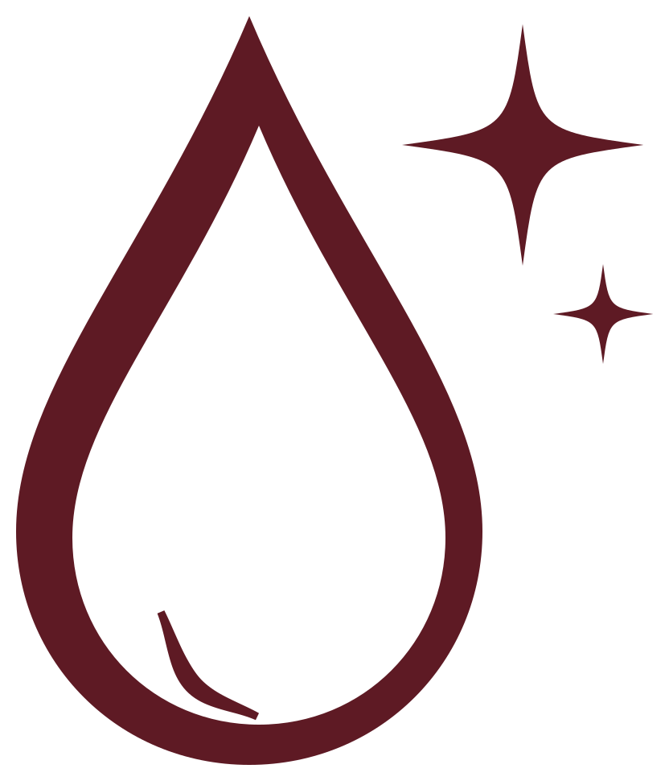
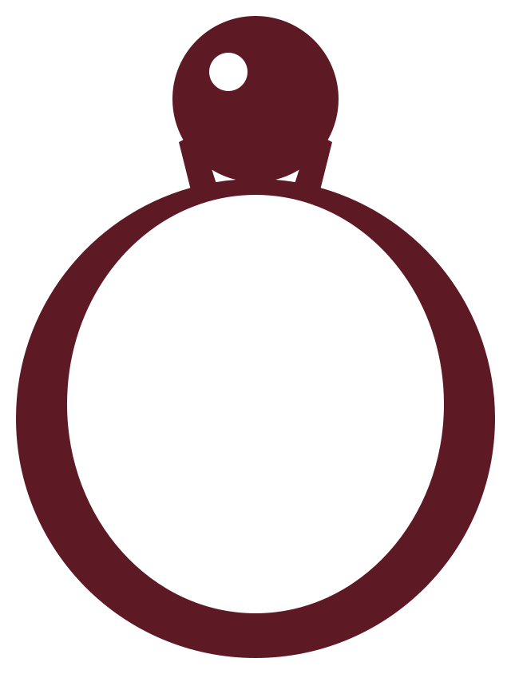
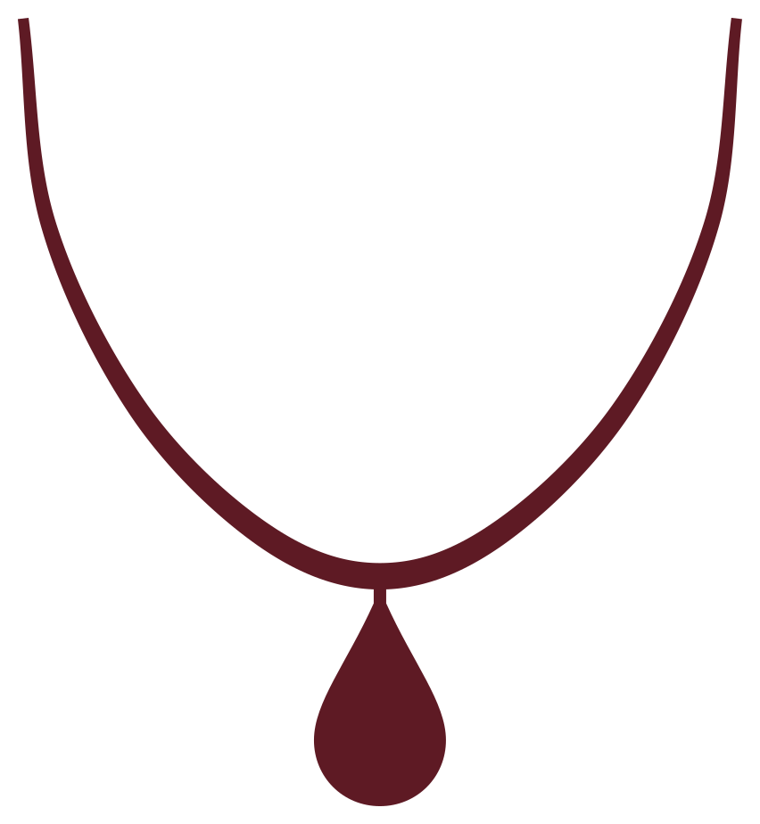

inicio · cuidados
cuidados
Una pieza hecha a mano dura muchos años si la tratás como lo que es: algo tuyo.

alpaca, bronce y cobre
- Con el tiempo y el contacto con la piel se oscurecen: es natural en estos metales.
- Limpialas con un paño suave y seco después de usarlas.
- Si se oscurecen, un paño de pulir joyas les devuelve el brillo.
terminación dorada y plateada
- Ponete la pieza al final: después del perfume, la crema y el maquillaje.
- Sacátela para bañarte, nadar, hacer deporte o lavar los platos.
- No uses productos abrasivos ni limpiadores de plata comunes.

piedras naturales
- Evitá golpes y cambios bruscos de temperatura.
- No las mojes ni las expongas a productos químicos.
- Cada piedra es única: su color y sus marcas son parte de la pieza.

cómo guardarlas
- En un lugar seco, cada una en su bolsita y separada de las demás.
- Los collares, abrochados y estirados, para que no se enreden.
- Un saquito de sílica en el joyero ayuda a que no se oxiden.
[Revisá estas recomendaciones con tu proceso real: según la terminación y el sellado que uses, pueden cambiar.]